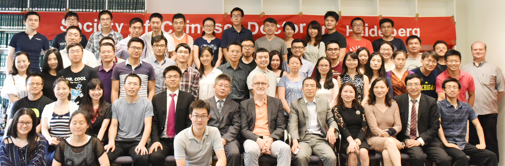

促进跨国连接
促进中德生物医药领域的学术合作与专业交流
HEIDELBERG · SINCE 2012
协会以医学、生物医药及相关学科的博士和博士后为核心成员，致力于构建高质量、跨学科的学术交流平台。

协作互助
✦务实进取
✦仁心向善
✦中德医学合作
2026 年度重点学术项目
论坛拟于 2026 年 10 月至 11 月在德国海德堡举行。论坛主要面向旅德青年医师、博士后、博士研究生及生命科学研究者，旨在促进中德医学科研交流与青年人才发展。
01 · 协会概况

旅德华人医师学者协会（SCDSG）是以学术交流为核心的非营利组织，前身为 2012 年成立的“海德堡龙一族”。
促进中德生物医药领域的学术合作与专业交流
推动医学科学知识传播与专业实践经验共享
促进生命科学领域的协同研究及交叉创新
为在德与归国华人医师及学者提供职业和学术支持
会员总数
学术交流活动总计
人才发展与招聘活动
持续拓展专业网络
协会发展历程
通过建立医学专业交流群，协会早期的同行互助网络逐步形成。
会员课题交流机制逐步建立并持续完善。
协会完成组织架构建设，并正式设立秘书处及会徽。
协会进一步完善学术论坛、公共传播及会员活动体系。
协会组织会员开展募捐及医疗物资采购，以专业行动支援武汉。
协会有序重启学术讲座、人才交流及国内论坛等核心活动。
协会已初步构建涵盖学术交流、人才发展及国际合作的常态化工作体系。
02 · 学术与会员活动
协会以学术讲座、国际论坛、公益实践及会员交流等多元形式，推动专业共同体持续发展。
03 · 中德医学与生命科学网络
协会会员由在德专业人士与归国成员共同构成，双方比例大致相当，专业联系延伸至多个国家和地区。请选择城市节点，查看各地区的会员与合作网络。
海德堡作为协会发源地，是德国会员网络的核心节点。
国内学术论坛 · 四届
四届论坛举办城市：大连、厦门、温州、上海
申请加入协会
会员申请原则上不设专业背景及学历层级限制。申请者可通过关注协会渠道、填写会员申请并参与相关活动，融入协会专业网络。